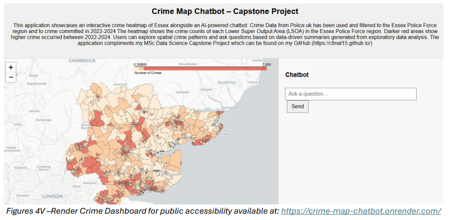

Capstone Project - Crime Analysis in Essex

Why crime and Essex? I've lived in the county all my life and I wanted to actually test my knowledge whilst gaining a greater understanding of what is on my doorstep. Politically, crime is a big talking point. Crime counts are significantly down from what they were decades ago. But, we have this wildfire of whispers from key figures who make it seem like Britian is lawless. So the project title was more than just a 'university project' but a chance to understand what Essex Police are currently facing.
My MSc Data Science Capstone Project explored how data science, machine learning, geospatial analytics, and generative AI can be combined to improve crime analysis and public accessibility of policing insights. Using over 500,000 crime records from Essex Police between 2022 and 2024, I developed an end-to-end analytical solution incorporating exploratory data analysis, forecasting, hotspot detection, anomaly identification, and a Retrieval-Augmented Generation (RAG) chatbot. The project aimed to demonstrate how publicly available crime data can be transformed into actionable intelligence for both decision-makers and members of the public.
Key Learnings
- Developed practical expertise in time-series forecasting using SARIMA models to identify and predict seasonal crime trends across Essex.
- Applied geospatial data science techniques, including K-Means and DBSCAN clustering, to identify crime hotspots and visualise spatial crime patterns using interactive mapping tools.
- Gained hands-on experience building machine learning models for anomaly detection and crime outcome analysis, while learning the importance of addressing class imbalance and model bias.
- Designed and implemented a Retrieval-Augmented Generation (RAG) chatbot using LangChain, vector databases, embeddings, and large language models.
- Developed a deeper appreciation for the ethical, operational, and societal considerations involved in deploying AI-driven decision-support systems within sensitive public sector environments.
Project Resources
The complete project includes the full analytical workflow, Python notebooks, machine learning models, dashboard implementation, and deployed RAG chatbot. Source code, technical documentation, and the live application can be accessed using the links below.
- Capstone Project Repository - Full research project, analysis notebooks, and Crime Dashboard & RAG Chatbot Repository.
- Crime Dashboard & Chatbot - Interactive crime map and publicly accessible AI-powered chatbot.
- Capstone Project Writeup - PDF Writeup of the entire project that was graded a 1:1.